唯一鑄造的原則是：「這些詞彙的意義，與現世人們的普遍理解絕對不同。」

錢包：0x000000000000000000000
進入我們的鑄造系統後，你會獲得一個隨機分配的詞彙。那個詞彙，就是你要負責鑄造的詞條。詞條的鑄造原則如下：
- 請盡量用精要的字數（10 - 100 字），容納最多的意義。
- 面對每一詞彙，請先判斷它的「詞性」，再來編寫「意義」。
- 這些詞彙的確切意義，已經隨著舊人類文明一同消逝了。因此，你沒有任何正確答案可以遵循，只能依靠你的直覺與想像——我們相信，像你這樣特別的人，基因裡必然銘刻了部分的線索。請相信你自己的答案。
- 我們唯一確定的是：「這些詞彙的意義，與現世人們的普遍理解絕對不同。」
- 詞彙是有壽命的，請在它耗盡自己的時間以前，盡快完成鑄造。
- 如果你尚無靈感，可以參考鑄造小組的示範註釋。
這些詞彙，是由「第二宇宙辭典」鑄造小組，從舊文明考古遺中，挖掘出來的斷簡殘篇。我們目前不知道這些斷簡殘篇的意義和全貌。但如果有足夠多的人，進行了詞彙的鑄造——
也許，我們就能「贖回」那個可能存在的「第二宇宙」。